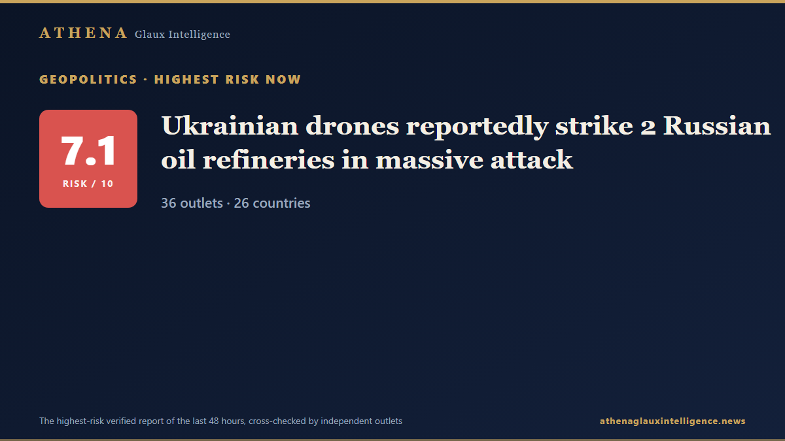
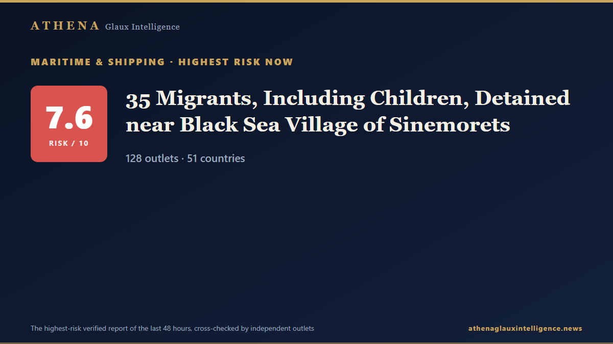

Risque 7.1Élevé
Géopolitique, économie et transport maritime — recoupés entre pays.
Géopolitique
Toute la géopolitique >Risque le plus élevé maintenant

Risque en hausseHausse au cours des dernières 24 heures
Maritime et transport
Bureau maritime >Risque le plus élevé maintenant
Risque 7.6Élevé
35 Migrants, Including Children, Detained near Black Sea Village of Sinemorets
Voir les preuves ›
Risque en hausseHausse au cours des dernières 24 heures
Chaque titre, vérifié dans plusieurs pays.
ATHENA Glaux suit 744 médias dans le monde. Une information devient un événement vérifié seulement lorsque des médias indépendants la rapportent. Chaque événement indique qui l'a publiée en premier et un score de risque avec ses raisons.
1 418événements en 24 h
744médias suivis
41minutes entre deux mises à jour
Séisme ou inondation près de chez vous cette semaine ?
Saisissez votre ville et voyez les séismes, inondations, tempêtes et alertes officielles à proximité, avec une liste du kit d'urgence 72 heures. Gratuit, sans inscription, et votre lieu reste sur votre appareil.
Des articles arrivent de médias indépendants : quand deux se rejoignent sur la même histoire, un événement vérifié naît.
Comment ATHENA vérifie une information
- CollecterLes reportages arrivent de médias indépendants dans de nombreux pays.
- CroiserQuand deux médias se rejoignent sur la même information, elle devient un événement vérifié.
- ExpliquerChaque événement montre qui était le premier, jusqu'où il s'est propagé et pourquoi le risque est ce qu'il est.
Perspectives mondiales des risques
Bilans hebdomadaires et mensuels : les événements les plus à risque, les tendances par domaine et par région, et ce qu'il faut surveiller.
Lire les perspectives ›Briefing quotidien
Les dix événements mondiaux les plus importants du jour, les risques en hausse et les nouveaux événements, chaque chiffre expliqué.
Ouvrir le briefing du jour › Géopolitique
GéopolitiqueAll Hostages Released After Supermarket Robbery in Cartagena
The hostage situation that kept Cartagena on edge for more than 17 hours ended early Wednesday, November 25, after special forces from the National Police and the Military Forces carried out a joint… de Colombia One
6.0Importance
5.8Risque · accru
92%Confiance
Les titres sont affichés en anglais, tels que publiés.
Géopolitique
Libya: 2 dead after Ukrainian attack on Russian warship in Benghazi
The head of the eastern administration in Libya has confirmed that two Libyan soldiers succumbed to their injuries. de DW English
Technologie et cyber
AI trust crisis exposes cracks in Korea's stock market
South Korea's stock market has lost nearly half its value in five months, as doubts about returns on artificial intelligence investment expose the risks of its heavy reliance on semiconductor stocks. de Korea Herald
Sponsorisé
Cybernetics and Artificial Intelligence Lab Welcome to the Cybernetics and Artificial Intelligence Laboratory, established at the Department of Business Administration of the National and Kapodistrian University of Athens. The lab is headed by Professor Dimitrios Thomakos. The lab aims to do research that can be published in top venues. Our research uses tools and methods of Artificial Intelligence, and lies in the following areas: - Forecasting - Decision making - Cyber security - Finance We are always looking forward to collaborating with exceptional students!
En savoir plus – Cybernetics and Artificial Intelligence LabNavires dans les détroits du monde en ce moment
Comptages AIS en direct. Touchez ou survolez une barre pour le détail.
Derniers reportages
Flipkart leadership shake-up: CEO Kalyan Krishnamurthy to step down after 11 years
Two Libyan soldiers die after Ukraine attack on Russian vessel
Senegal regains Africa Cup title after sports court overturns ruling favoring Morocco
Iran lawmaker claims era of sanctions and blockades is over
Cybersecurity Breach Reported At CIA And National Intelligence Director’s Office
‘Carthage Resident Al Gore’ Buys His Hometown Tennessee Newspaper
German President Frank-Walter Steinmeier arrives in Nairobi ahead of Ruto meeting
Iran determined to break blockade — Nationals Security Council chief
Accidents et urgences
Ras Al Khaimah bus-truck collision kills 13, injures 14
Two more passengers die in hospital following early-morning crash; Indian nationals among the victims. de News of Bahrain
Technologie et cyber
Jensen Huang is back, but Nvidia still has to deal with his baggage
Massive data centers in Southeast Asia exploited a gap in U.S. sanctions, providing crucial computing power for Chinese companies and a cover for alleged chip smuggling. de to vima
Accidents et urgences
Turkish military helicopter crash kills 5 during training flight
Five crew members were killed Tuesday when a Turkish military helicopter crashed during a training flight in central Turkey’s Eskişehir province, Turkey’s defense ministry said. de Turkish Minute
Géopolitique, politique et sécurité
Plus ›Guerres et conflits
NATO to Deploy Early-Warning Aircraft to Poland Following Russian Missile Incidents
NATO has agreed to provide Poland with an AWACS early-warning aircraft after three Russian Kh-101 missiles detonated on its territory. de Kyiv Post
- Guerres et conflits
2 Indians among 11 injured in Houthi attack in Saudi Arabia's Riyadh
- Diplomatie et sommets
S. Korean won weakens slightly against U.S. dollar on foreign outflows
- Élections et politique
Netanyahu's incitement is fueling violence against Arabs in Israel
- Diplomatie et sommets
The Big Disconnect in Kushner’s “Article 5-Like” Security Offer for Ukraine in Russia Talks
Économie, finance et marchés
Plus ›Banques et crédit
New Israeli army gates could cut off 70,000 Palestinians in southern West Bank, mayor warns
Hundreds who turned to farming west of Hebron could struggle to reach their fields. de Anadolu Agency (English)
- Emploi et salaires
Google Cloud says about 30 roles eliminated in India, calls lay-off rumours 'totally inaccurate'
- Actions, obligations et marchés
Tech firms back in crosshairs as Huang rally reverses
- Actions, obligations et marchés
Nikkei drops nearly 3% amid AI concerns despite Nvidia CEO's return
- Inflation et taux d'intérêt
Australian Dollar reclaims 0.6600 before crucial RBA inflation test
Commerce, industrie et infrastructures
Plus ›Aérien, rail et route
Palace denies final deal to buy 100% of US food, energy supplies
Malacañang on Tuesday, 24 November 2026, maintained that no agreement had been finalized requiring the Philippines to source all its agricultural and energy… de Daily Tribune
- Industrie manufacturière
Tata Steel shares rise 1%, APL Apollo falls 9% as brokerages turn cautious on ₹28,000 cr deal
- Chaînes d'approvisionnement
Ansarallah unveils massive Mokha depots packed with Saudi and Balkan munitions
- Construction et infrastructures
S-Oil completes W9tr Shaheen petrochemical project
- Aérien, rail et route
CJP Co-Convenor Saurav Das stopped from flying to London amid document scrutiny
Énergie, ressources et environnement
Plus ›Climat et politique climatique
EU to Seek Overhaul of UN Climate Consensus Decisions After COP31 Failure
The European Union will propose to the UN to review the consensus decision-making model of the COP climate conferences after the latest summit ended without a deal but with a lot of quarrels about… de OilPrice.com
- Nucléaire
UKRAINE PROTESTS SANCTIONED RUSSIAN OFFICIAL’S APPOINTMENT TO IAEA LEADERSHIP
- Climat et politique climatique
Forum Chair backs Australia’s COP31 role as Albanese defends conference spending
- Sécurité énergétique
“K” LINE Signs Contract for Construction of Two LPG Dual-Fuel VLGCs
- Sécurité énergétique
Equinor Inks 18-Year Gas Supply Deal with Germany's VNG
Technologie, IA et cybersécurité
Plus ›Puces et calcul
US Blacklists Megaspeed Cloud Company Linked to Nvidia Scandal
Suspected China spy linked to Nvidia's ex-boss left in 2025, Megaspeed says. de Ada Derana
- Intelligence artificielle
Anthropic and OpenAI staff reportedly warn unreleased models may be too powerful to release safely
- Logiciels et cloud
Microsoft Declares ‘Code Red’ After Historic 24-Hour Outage
- Intelligence artificielle
AI consumes less water per dollar spent than almond milk or golf: Report
- Puces et calcul
Op-ed: Trump’s Nvidia board intervention put a price on national security. Our adversaries will take note
Entreprises et investissement
Plus ›Stratégie d'entreprise
FSSAI on pan-India enforcement drive on packaged drinking water, lab test to take 1-2 months: CEO Rajit Punhani
New Delhi: FSSAI CEO Rajit Punhani on Wednesday said the food regulator is collecting samples of packaged drinking water from across the country and lab testing will be complete in around two months. de Deccan Herald
- Secteurs et risques
Economic Watch: China's emerging sectors unleash fresh employment opportunities
- Gouvernance et dirigeants
Asia Cup Rising Stars 2026: India A’s route to the semifinal against Sri Lanka A
- Start-up et innovation
IHS Nigeria commissions Babagana Kingibe Innovation Hub in Maiduguri
- Stratégie d'entreprise
ShipVet Appoints New CEO as Founder Steps Back
Accidents et urgences
Plus ›Accidents et urgences
Hanoi gas explosion kills 6, injures 10
Six people were killed and 10 others injured in a gas explosion at a food shop on Nguyen Van Tuyet Street in Hanoi on Tuesday, prompting authorities to evacuate nearby residents and launch an… de Tuoi Tre News
- Accidents et urgences
Every Woman and Girl Has the Right to Live Free from Violence and Fear
- Accidents et urgences
Lagos Tightens Fire Safety Regulations to Protect Business Investments
- Accidents et urgences
Plane crash off the coast of Mississippi kills 6, including 2 children
- Accidents et urgences
Bristol City 1-1 Wrexham recap: Reaction after Cam Pring fires Robins to draw at Ashton Gate
Trois façons de lire aujourd'hui
Commencez par celle qui convient à votre tempsÉvénements vérifiés
Classés selon l'ampleur de la couverture
- What NVIDIA CEO Jensen Huang will face when he testifies before US Congress183 médias · 56 paysRisque 4.5
- Ukraine Insists Attack on Russian Ships in Libya was Self-Defense120 médias · 46 paysRisque 6.2
- Jensen Huang lost $8.2b when he quit Nvidia, gained $33.9b on his return77 médias · 30 paysRisque 3.7
- 11 injured after Houthi drone hits Riyadh’s tallest tower61 médias · 30 paysRisque 4.2
- China's Huawei convicted in sprawling US criminal trial over Iran business36 médias · 23 paysRisque 3.0
Bureau d'évaluation
Posez une question et lisez une évaluation argumentée d'un sujet majeur, avec ce qui la démentirait.
Ouvrir le Bureau d'évaluation ›Aujourd'hui en chiffres
| 13:00 | 673 |
|---|---|
| 14:00 | 652 |
| 15:00 | 497 |
| 16:00 | 393 |
| 17:00 | 409 |
| 18:00 | 446 |
| 19:00 | 782 |
| 20:00 | 1010 |
| 21:00 | 901 |
| 22:00 | 473 |
| 23:00 | 475 |
| 00:00 | 430 |
| 01:00 | 444 |
| 02:00 | 357 |
| 03:00 | 458 |
| 04:00 | 380 |
| 05:00 | 331 |
| 06:00 | 472 |
| 07:00 | 160 |
| 08:00 | 411 |
| 09:00 | 343 |
| 10:00 | 537 |
| 11:00 | 1248 |
| 12:00 | 1175 |
Risque des événements du jour
Géopolitique78Économie et marchés33Entreprises33Commerce et industrie29Technologie et cyber26Énergie et environnement18Maritime4
Signaux émergents
- Hausse soudaine · ActifUzbekistan and Jordan
- Hausse soudaine · ActifCourt of Arbitration for Sport
- Hausse soudaine · ActifHuawei
- Hausse soudaine · ActifCAF
- Nouveau nom dans l'actualité · ActifVillavicencio
Alertes officielles
- M 6.5 - Vanuatu regionM6.5 · USGS ·
- M 5.9 - 238 km SW of Yanglong, ChinaM5.9 · PAGER yellow · USGS ·
Restez informé
ATHENA Weekly Risk Picture
Les plus grands risques géopolitiques, économiques et maritimes de la semaine, recoupés et notés.
Chaque vendredi à 8 h (heure d'Athènes) · gratuit · en anglais
S'abonner gratuitementATHENA sur Telegram
Les nouvelles dès leur publication : les événements urgents de risque 6 ou plus, un récapitulatif horaire, les mises à jour des suivis de risque et le briefing quotidien à 10 h.
Gratuit · publications en anglais · désinscription à tout moment
Rejoindre le canalL'inscription est gérée par beehiiv avec double confirmation : rien de ce que vous saisissez n'est envoyé à ATHENA, et chaque numéro contient un lien de désinscription.
Suivi des risques
Plus ›Détroit d'OrmuzRisque 5.110 nouveaux événements cette semaine · en baisse (23 la semaine précédente)Mer RougeRisque 7.322 nouveaux événements cette semaine · en baisse (47 la semaine précédente)Grèce et TurquieRisque 3.76 nouveaux événements cette semaine · stable par rapport à la semaine précédenteChypreRisque 4.913 nouveaux événements cette semaine · en baisse (18 la semaine précédente)Sanctions contre la RussieRisque 6.515 nouveaux événements cette semaine · stable par rapport à la semaine précédenteGuerre en UkraineRisque 8.1225 nouveaux événements cette semaine · stable par rapport à la semaine précédenteProche-Orient : Israël et GazaRisque 6.875 nouveaux événements cette semaine · stable par rapport à la semaine précédenteTaïwanRisque 2.711 nouveaux événements cette semaine · en baisse (14 la semaine précédente)Pétrole et gazRisque 3.927 nouveaux événements cette semaine · en baisse (39 la semaine précédente)Canal de SuezRisque 0.00 nouvel événement cette semaine · en baisse (3 la semaine précédente)Détroits turcsRisque 0.00 nouvel événement cette semaineCanal de PanamaRisque 0.00 nouvel événement cette semaineFlotte fantômeRisque 2.72 nouveaux événements cette semaine · en baisse (4 la semaine précédente)Navigation en mer NoireRisque 8.12 nouveaux événements cette semaine · en baisse (5 la semaine précédente)Banques centrales et tauxRisque 4.236 nouveaux événements cette semaine · en baisse (46 la semaine précédente)Économie grecqueRisque 0.87 nouveaux événements cette semaine · stable par rapport à la semaine précédenteÉnergie en Méditerranée orientaleRisque 0.01 nouvel événement cette semaine · en baisse (4 la semaine précédente)BalkansRisque 4.914 nouveaux événements cette semaine · en baisse (26 la semaine précédente)Migration en MéditerranéeRisque 0.00 nouvel événement cette semaine · en baisse (3 la semaine précédente)
Risques mondiaux — semaine 48, 2026 (23–29 nov.) ›
Dans le monde
Moyen-Orient et Afrique du NordSaudi-led coalition strikes Hodeidah as Houthis threaten ports
57 événements
EuropeAndy Burnham government confirms when £100 payment will arrive
56 événements
Amérique du NordWhat NVIDIA CEO Jensen Huang will face when he testifies before US Congress
56 événements
Asie du Sud-EstVietnam Embassy celebrates Vietnamese Culture Day in Phnom Penh
54 événements
Asie du SudSheikh Hasina seeks to return to Bangladesh on December 16 on state carrier
53 événements
Russie et EurasieUkrainian drones reportedly strike 2 Russian oil refineries in massive attack
46 événements
Asie de l'EstS. Korean won weakens slightly against U.S. dollar on foreign outflows
43 événements
Afrique subsaharienneCOP31 ends in failure as countries split over fossil fuels, climate finance
43 événements
OcéanieForum Chair backs Australia’s COP31 role as Albanese defends conference spending
30 événements
Amérique latine et CaraïbesAll Hostages Released After Supermarket Robbery in Cartagena
25 événements